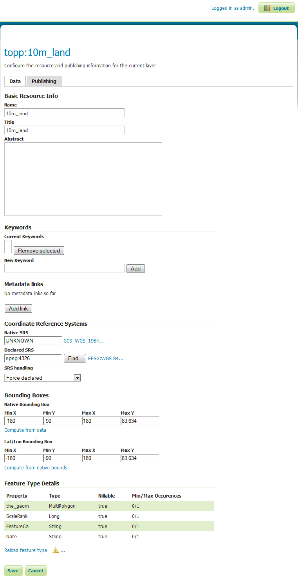

GeoServer Quickstart¶
GeoServer ist eine Java-Anwendung zur Veröffentlichung von Karten (und Daten) für andere Clients (z. B. Webbrowser). GeoServer verfügt über eine browserbasierte Administration und verbindet so im Hintergrund viele Datenquellen.
Dieser Quickstart beschreibt, wie:
- Vektor und Rasterdaten einer GeoServer-Instanz hinzufügt
- Farben für einen Stil anwendet, der sich auf die Darstellung von Kartenobjekten auswirkt,
- veröffentlichte Daten in einer einfachen Web-basierten Karte testet,
- Karten in anderen Applikationen darstellt und welche Applikationen hierfür verwendet werden können und
- einen NetCDF Layer hinzufügt
Contents
Geoserver starten¶
Wählen Sie aus dem Startmenü . Die Applikation benötigt einen kurzen Augenblick um zu starten und öffnet eine Webseite unter http://localhost:8082/geoserver/web

Melden Sie sich mit dem Benutzernamen admin und dem Kennwort geoserver an. Sie sehen nun die admin-Seite.

Über den Link zur Layer-Vorschau (Layer Preview) innerhalb des Data Bereiches im linken Menübaum ermöglicht es Ihnen, die Layer des GeoServers anzusehen.

Scrollen Sie zum unteren Rand der Seite und klicken Sie auf den Link OpenLayers in der Zeile tiger-ny. Dadurch wird ein neues Fenster mit einer Vorschau einiger Beispieldaten geöffnet.

Sie haben in diesem Kartenfenster drei Möglichkeiten, Kartenausschnitte einzustellen:
- im linken Bereich über die Navigationsleiste können Sie mit einem Klick auf + den Ausschnitt verkleinern und somit mehr Details sehen. Mit einem Klick unterhalb des Schiebereglers können Sie den Ausschnitt mit - vergrößern um weniger Details zu sehen und somit eine Übersicht zu erhalten. Sie können auch den Schieberegler selbst nutzen, um den Detalierungsgrad festzulegen.
- Über das Scrollrad der Maus, sofern sie eine Scrollmaus nutzen, können Sie beim Drehen nach oben hineinzoomen und beim Drehen nach unten herauszoomen.
- Bei gedrückter
ShiftTaste können Sie mit der Maus ein Rechteck aufziehen, um einen Bereich anzeigen zu lassen.
Experimentieren Sie mit dieser Vorschau und testen Sie auch die anderen Daten. Sobald Sie einen Eindruck gewonnen haben, wie es sich anfühlt, Daten anzusehen, können Sie beginnen, selbst welche einzubinden und zu veröffentlichen.
Laden von Daten¶
Bemerkung
Sie werden nicht in der Lage sei, die folgenden Schritte durchzuführen, wenn Sie ein read only Dateisystem nutzen, so bei der DVD. Für diesen Fall sollten Sie entweder GeoServer von der DVD auf das Dateisystem installieren oder ein USB Stick basiertes System nutzen.
In diesem Beispiel werden wir die Natural Earth Datensätze nutzen, die in OSGeoLive mit enthalten sind (/usr/local/share/data/natural_earth2/).
Es muss ein Store für unsere Daten angelegt werden. Von der GeoServer Administrationsseite gehen Sie zu Stores.
Klicken Sie auf Add new Store. Folgende Ansicht werden Sie vor sich haben:

Wählen Sie Directory of spatial files und sie werden folgendes sehen:

Geben Sie einen Namen für den Store an - hier wurde Natural Earth eingegeben - sowie eine URL für den Datensatz, in unserem Fall
/usr/local/share/data/natural_earth2/. Sie können die Browse Schaltfläche nutzen, um ein Verzeichnis auf dem Dateisystem zu finden, falls sonstige Daten eingebunden werden sollen.Schließen Sie den Vorgang mit Save ab.

Klicken Sie auf Publish auf einen der Einträge der nächsten Seite, um das veröffentlichen der Layer abzuschließen. Dies wird Sie zur Layers-Seite führen:
Wenn Sie auf der Seite nach unten scrollen, sehen Sie, dass | GS| für Sie viele Felder für Sie ausgefüllt hat. Wenn Sie Coordinate Reference System erreichen, werden Sie feststellen, dass unter Native SRS UNKNOWN angegeben ist. Sie müssen das nächste Feld (deklarierte SRS) ausfüllen, um sicherzustellen, dass | GS| weiß, wo sich die Daten befinden.
Sie können epsg:4326 in das Feld eingeben oder zu http://prj2epsg.org/search gehen und in die Zeichenfolge einfügen, die Sie sehen, wenn Sie auf den Link neben „UNKNOWN“ klicken.
Klicken Sie auf Compute from data und Compute from native bounds, um die BoundingBox zu füllen.
Klicken Sie abschließend auf save. Sie haben damit Ihre erste Ebene veröffentlicht.
{kind=link}
Bemerkung
Sollten Sie sich den Layer über die Voransicht ansehen und nicht mit der Darstellung der Daten zufrieden sein, liegt dies daran, dass ein Standard-Stil verwendet worden ist. Wie der Stil eines Layers angepasst wird, wird im folgenden Kapitel beschrieben.
Sie können die Prozedur mit weiteren Layern vollziehen, um auch diese zu veröffentlichen. Dabei haben die Möglichkeit über die Layer Seite eine neue Ressource mit Add a new resource hinzuzufügen. Auf der folgenden Seite wählen Sie den bereits angelegten Natural Earth Store in der Auswahlliste aus, um diesem die neue Ressource zuzuordnen.
Anpassen des Stils¶
Styling eines Datensatzes in einen Karten-Layer | FS] verwendet einen OGC-Standard namens | SLD|. Diese werden als XML-Dateien definiert, die die Regeln beschreiben, die verwendet werden, um verschiedene Stile auf die Daten anzuwenden.
Um zu beginnen, können Sie die Land- und Ocean-Datasets formatieren. Sie können SLD-Dateien mit einem einfachen Texteditor erstellen, aber manchmal ist ein grafischer Editor besser. Es gibt mehrere Möglichkeiten hier, aber uDig ermöglicht es Ihnen, die Shapefiles direkt zu öffnen und einfache Stile mithilfe einer GUI anzuwenden. Es bietet auch einen einfachen Editor, um den XML-Code zu ändern, wenn dies erforderlich ist.
uDig verwenden, um einen einfachen Stil zu erzeugen¶
Bemerkung
Weitere Informationen, wie uDig zu verwenden ist, können Sie unter uDig Quickstart finden.
Öffnen Sie uDig und fügen Sie die Shape-Datei hinzu (mit der Schaltfläche Daten hinzufügen in der oberen linken Ecke).
Sie können die Shapefiles ne_10m_land und ne_10m_ocean per Drag&Drop hinzufügen, uDig setzt den Stil automatisch, um die Daten anzeigen zu können:

Wählen Sie in der Liste Layer den Stil-Button aus (dieser sieht aus wie die Palette eines Künstlers).

Dadurch wird der Bereich Style geöffnet.
Im einfachen Fenster können wir ganz einfach ein schönes Blau für die Ozeane auswählen, indem wir auf das farbige Feld auf der Füllregisterkarte klicken und aus der Farbauswahl auswählen, die es erzeugt. Wir können auch die Deckkraft der Füllung auf 100% erhöhen, um die Farbe besser aussehen zu lassen. Wählen Sie dasselbe Blau für die Umrandungsfarbe, damit es übereinstimmt.

Klicken Sie auf
OKund uDig zeigt die Änderungen an.
Wiederholen Sie die obigen Schritte, um die Farben der Landebene zu ändern. Sie können den Abschnitt
define custom colorsverwenden, um Ihre bevorzugte Farbe auszuwählen.
Dies ergibt eine schön aussehende Basiskarte.

Stile in GeoServer hinzufügen¶
Jetzt müssen wir diese Stile auf nach GeoServer übertragen.
- Im Stilfenster befindet sich eine Exportschaltfläche, mit der Sie die SLD-Datei speichern können, die Ihren Stil definiert.
- Nach dem Speichern können Sie zur | GS| Admin-Seite zurückkehren und anschließend
Styles(am unteren Rand des AbschnittsDaten) auswählen. - Wählen Sie den Link
Add New Style(Neuen Stil hinzufügen)‘. Am unteren Rand dieser Seite befindet sich ein Datei-Upload-Feld und eine Schaltfläche zum Durchsuchen. - Klicken Sie auf Durchsuchen, um die Dateien zu finden, die Sie gerade gespeichert haben.
- Klicken Sie auf den Upload-Link (neben der Schaltfläche „Durchsuchen“) und eine Kopie der Datei wird im Editor angezeigt.
- Wenn Sie auf die Schaltfläche „Validieren“ klicken, erhalten Sie in den hervorgehobenen Zeilen einen Fehler, aber Sie können den Fehler sicher ignorieren (oder diese Zeilen löschen, da sie keine Auswirkung haben).
- Drücken Sie das Submit am unteren Rand der Seite.

Hinzufügen des Stils zum Layer¶
- Klicken Sie auf den Link Layers im Menü auf der linken Seite des | GS| Fenster.
- Klicken Sie auf die Ebene (z.B. ne_10m_land), und wählen Sie dann die Registerkarte Publishing.
- Ändern Sie das Auswahlfeld Default Style in den Namen des Stils, den Sie im vorherigen Abschnitt hochgeladen haben.
- Klicken Sie nun auf Save und gehen Sie zur Seite Layer-Vorschau, um zu überprüfen, ob die Ansicht gut aussieht.
Bemerkung
Sie können für alle Natural Earth Datensätze beispielhafte Stil-Definitionen unter /usr/local/share/geoserver finden.
Clients für WMS Layer¶
Die | WMS| Layer, die | GS| bereitstellt, können von einer Vielzahl von Clients dieser OSGeoLive-Distribution verwendet werden, einschließlich:
Hinzufügen einer Ebene aus einer NetCDF-Datei¶
Das NetCDF Plugin von GeoServer NetCDF ermöglicht die Einbindung von Rasterlayern aus NetCDF Files.
Einen NetCDF Speicher anlegen¶
Nach dem Ausführen von „GeoServer starten“
Melden Sie sich als Administrator an.
Klicken Sie auf Add stores then NetCDF.
Geben Sie einen Wert für den Datenquellennamen (in diesem Beispiel verwenden Sie „netcdf“) und eine NetCDF-URL ein. Sie können diese Beispieldatei verwenden:
file:///usr/local/share/data/netcdf/polyphemus_20120401.nc
Drücken Sie „Speichern“, „Veröffentlichen“ der Ebene „O3“.
Scrollen Sie nach unten auf der Registerkarte „Daten“ und drücken Sie erneut „Speichern“.
{kind=link}
Vorschau des NetCDF Layer¶
Wählen Sie „Layer Preview“ aus dem Menü auf der linken Seite
Scrollen Sie nach unten, um den Eintrag „cite:O3“ zu finden, und klicken Sie auf den Link „OpenLayers“, um eine Vorschau des Layers anzuzeigen.
Wenn Sie auf Punkte klicken, wird der Wert „Ozone_concentration“ in einer Tabelle am unteren Rand der Karte angezeigt.

Bemerkung
Diese GeoServer-Instanz wurde mit der Java-Systemeigenschaft NETCDF_DATA_DIR konfiguriert, um die Veröffentlichung von NetCDF-Dateien in schreibgeschützten Verzeichnissen zu ermöglichen.
Was kommt als Nächstes?¶
Dies ist nur der erste Schritt auf dem Weg zur Verwendung von GeoServer. Es gibt viel mehr Funktionalität, die Sie ausprobieren können.
- GeoServer Projektseite - http://geoserver.org/
- GeoServer Benutzerhandbuch - https://docs.geoserver.org/latest/en/user/
- GeoServer Tutorials - https://docs.geoserver.org/latest/en/user/tutorials/index.html
- GeoServer Styling Workshop - https://docs.geoserver.org/latest/en/user/styling/workshop/index.html